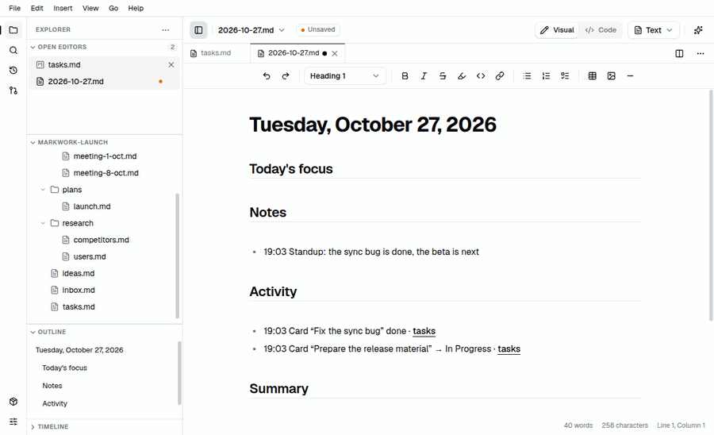

Workspace
The daily journal
The journal records what happens in your work today. You write short notes at any time, and Markwork completes them with the work activity that has already happened: cards that were moved, agent changes you approved, harness results, and Git commits. Everything is stored as a plain Markdown file.

Opening today's journal
- Ctrl+Alt+J, the ☰ menu → Today's Journal, or the Today's journal row on Home.
- The journal is stored in
journal/YYYY-MM-DD.mdin the work folder. If it does not exist yet, the file is created from a template titled with today's date with the sections Today's focus, Notes, Activity, and Summary. - The journal needs an open work folder (Ctrl+Shift+O).
- The journal is a normal document: edit it, save it, commit it, and link it with
[[note]]like any other file. Journals of other days are opened from the file tree.
Quick capture
Ctrl+Shift+J (or the + button on the Journal row on Home) opens a one-line dialog. The text goes to the end of the Notes section as a time-stamped item, for example - 11:40 Flatpak cannot be tested on this machine yet, without leaving the document you are working on.
- If today's journal is open in a tab, the note goes in through its editor as one undo step. If not, the note is written straight to its file (the file is created from the template if it does not exist).
- Markers are free to use as you like, for example
!for a blocker,?for a question, or→to continue tomorrow. Markwork does not interpret them, but the Assistant can use them when summarizing.
Automatic activity
Throughout the day Markwork records the work activity in this work folder:
- Kanban cards that move to another list, are checked as done, or are newly added, from the board view, from the checkbox on Home, or from a harness. A card whose text was only edited is not recorded.
- Agent changes that you apply from the review window (also when they are undone).
- Harness results, for example pi finished “Fix checkout” in project shop.
- Git commits of that day in the repo of the work folder (read straight from
git logwhen the journal is opened).
When the journal is opened, activity that is not there yet is merged into the Activity section as time-stamped items. The names of boards and files are written as [[…]] links that can be opened with Ctrl+click. The merge only adds lines: lines that you edited or deleted are not overwritten, and one Ctrl+Z undoes the whole merge.
The activity log is stored in .markwork/activity/YYYY-MM-DD.jsonl in the work folder (ignored by Git through .markwork/.gitignore, and not browsed by the agent).
The end-of-day summary
The command palette (Ctrl+Shift+P) → Summarize Journal with Assistant opens today's journal, opens the Assistant panel, and asks it to propose a summary under Summary: what was finished, what blocked, and what continues tomorrow. The proposal appears in the review window like any other agent change, so nothing is written before you press Apply. It needs a DeepSeek API key.
On Home
Home shows the Today's journal row with the number of notes in the journal and the activity recorded today (including what has not been merged into the file yet). Click the row to open the journal, or the + button for a quick capture.